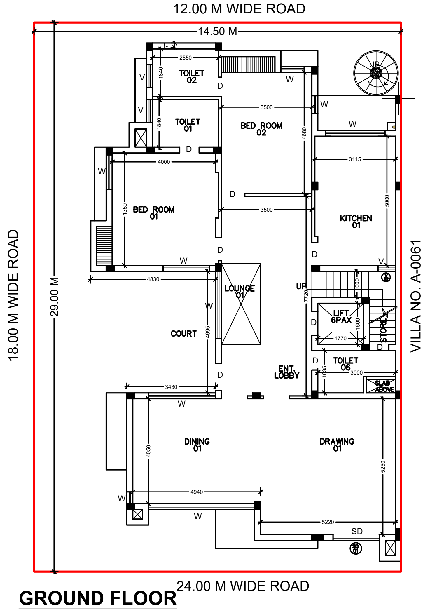
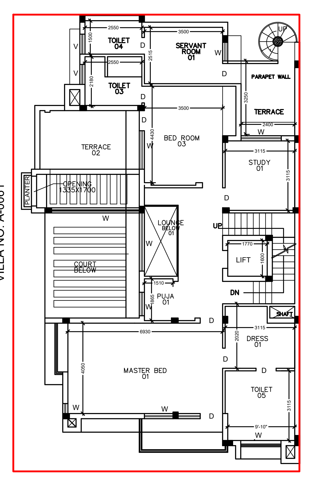
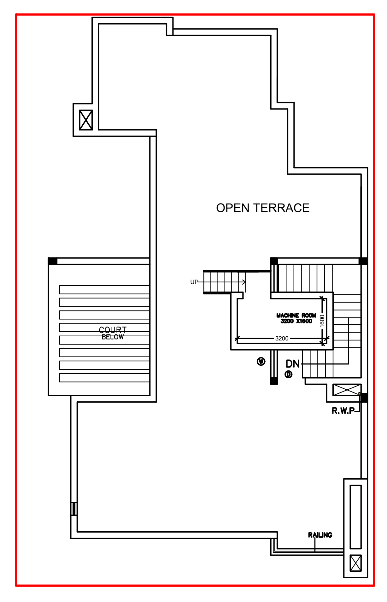

YOUR RENOVATION WORKSPACE
Explore your villa
Rotate the model, choose a floor and compare it with your photos.
The whole villa
Some details are estimates. See assumptions and measurements to check.
MODEL REFERENCEAssumptions & measurements to check
These are the current assumptions used across all views and the downloadable model. The drawing and photographs are references, not a measured survey.
- Plot and boundary: the plan states 14.50 × 29.00 m, but its red outline is not proportionate to those dimensions. House position, garden depth, gates and setbacks are estimated. The adjacent-home side is shown as a much taller shared-side wall, with lower garden and rear returns. Its assumed heights are approximately 1.8 m at the front, 6.9 m beside the villa and 3.5 m at the back; the actual height, ownership and changes along the length need checking. Use Neighbour side to see it, or untick Boundary to look through it.
- Levels and stairs: ground to first floor is set at 3.30 m, and first-floor surface to roof surface at about 3.16 m. The confirmed hall ceiling heights of 9½ ft and 10 ft are not yet reproduced. The stair's nine-step first flight, turn, other steps, enclosure and landings are photo-informed approximations.
- Tank and stair-head room: you confirmed the tank is on top of the stair-head room. The tank is represented as about 1.20 m in diameter and 1.27 m high, on an estimated platform. The larger stair-head is shown over the combined stair/core area, approximately 3.20 × 3.10 m; the plan's 3.20 × 1.60 m machine-room callout describes only part of that area. The actual outline, height and tank supports need checking. No lift or lift shaft is present.
- Terraces and roof walls: the courtyard-side terrace includes the opening and planter; the model places overhead grilles over the opening and court, while the main terrace stays open to the sky. The service terrace has no cross walls. Exact edges, grille positions, roof access and parapet heights need checking. The roof parapets are roughly 0.86 m high in the model, with lower portions at the front. The mosaic is taken from a terrace photograph; its exact level, extent and scale are unconfirmed.
- Openings and finishes: the separate court and lounge openings, lounge railing, puja marker, window and door positions, room layout and rear spiral stair are approximate. The blank rear face follows the rear photographs; the service-side windows are estimated from the photos and plan. The puja marker is a label rather than a fully modelled room. Facade colours and materials are based on selected photos and are not a complete record of finishes.
Before construction or ordering materials, verify the existing building, measurements and structure on site.
ORIGINAL DRAWINGS
Floor plans
Choose a floor to see the drawing and its key notes.
On these plans, the front and garden face the 24 m road at the bottom. The side road is on the left, the 12 m road is at the back, and villa A-0061 is on the right. The north marker appears to point left; check on site.
01 / ORIGINAL DRAWINGGround floor


FRONT TO BACK
Hall, court and bedrooms
The drawing and dining area are at the front. Behind them are the entry, the courtyard and separate lounge, with the main stairs along the neighbour side. Two bedrooms and the kitchen sit toward the back.
- Drawing: 5,220 × 5,250 mm shown.
- Dining: 4,940 × 4,050 mm shown.
- Lift on the drawing: you confirmed the actual villa has neither a lift nor a lift shaft. The space around the stairs needs checking.
- Rear: the plan and photos show a round service stair.
- Bedroom 01: check the printed 1,350 mm dimension; it does not appear consistent with the drawn room.
Tap the drawing for a larger view. Dimensions are as marked on the plan, not verified measurements.
02 / ORIGINAL DRAWINGFirst floor


FRONT TO BACK
Rooms around the open spaces
The master bedroom spans the front, with dress and toilet at the side. Bedroom 03, the study and servant room lie farther back.
- Master bedroom: 6,930 × 4,050 mm shown.
- Three distinct areas: court below, lounge below and Terrace 02. The puja is beside the lounge opening.
- Study: you confirmed a door to the service terrace; the drawing marks a window at that edge.
- Back: the service terrace is an open area between the study, servant room and round stair, without walls crossing it.
The opening and planter are part of the terrace. The marked opening has overhead grilles; the main terrace remains open to the sky. Its exact size and edges need checking.
03 / ORIGINAL DRAWINGRoof terrace


ABOVE THE FIRST FLOOR
Open terrace and stair core
The plan shows a large open terrace, the court below and a machine room beside the staircase.
- Machine room: 3,200 × 1,600 mm is marked on the roof drawing.
- Water tank: you confirmed it sits on top of the stair-head room. It is not labelled on this plan; its size and supports need checking.
- Adjacent property: you identified the upper light-coloured roof in the aerial photo as your villa.
The roof access, room use and any tank supports need further photographs or measurements.
The red boundary is not drawn in the same proportions as those dimensions, so garden depth and setbacks cannot be taken from its outline. Read the full layout review ↗ · Open the original plan ↗
Reference photos


PROJECT REFERENCES